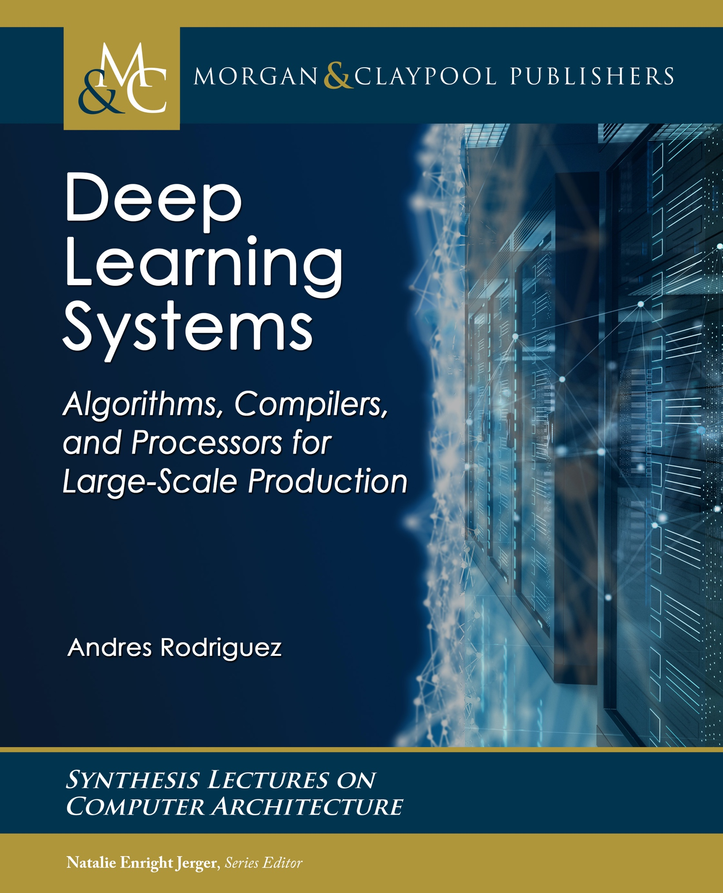

Deep Learning Systems
Deep Learning Systems: Algorithms, Compilers, and Processors for Large-Scale Production
This book describes deep learning systems: the algorithms, compilers, processors, and platforms to efficiently train and deploy deep learning models at scale in production.

Citing the book
To cite this book, please use this bibtex entry:
@book{rodriguez2020,
author={Andres Rodriguez},
title={Deep Learning Systems: Algorithms, Compilers, and Processors for Large-Scale Production},
series={Synthesis Lectures on Computer Architecture},
publisher={Morgan & Claypool Publishers},
month={Oct.},
year={2020}
}
Andres Rodriguez. Deep Learning Systems: Algorithms, Compilers, and Processors for Large-Scale Production. Synthesis Lectures on Computer Architecture. Morgan & Claypool Publishers. Oct. 2020.
Ordering a copy
The book can be ordered as hardcover, paperback and PDF at Morgan and Claypool and Amazon. A PDF copy is available to most research institutions at IEEE.
Copyright
A special thanks to the publisher Morgan & Claypool for permitting the HTML distribution of the book freely in this website. Any reproduction of this content requires permission by Morgan & Claypool who holds the copyright to the book.
Errata
Please submit your comments and errata to deep.learning.systems at gmail dot com. Thanks in advance for taking the time to contribute.
Disclaimer
The views expressed in the book are entirely my own and do not represent those of my employer or those acknowledged. Details regarding software and hardware products come from publicly disclosed information, which may not represent the latest status of those products.